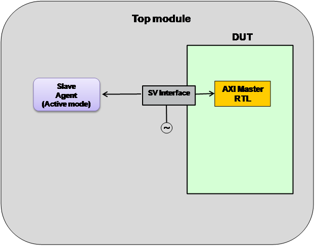

In this scenario, you are testing an AXI Master DUT using an UVM AXI Slave.
Testbench setup: Configure the AXI System Env to have one Slave Agent, in active mode. The active Slave Agent will respond to the transactions generated by master DUT. The Slave Agent will also perform passive functions such as protocol checking, coverage generation and transaction logging.
Implementation of this topology requires the setting of the following properties: (Assuming instance name of system configuration is "sys_cfg").
System configuration settings:
sys_cfg.num_masters = 0;
sys_cfg.num_slaves = 1;
Port configuration settings:
sys_cfg.slave_cfg[0].is_active = 1;
When DUT has a single AXI master port to be verified, testbench can either use a Slave Agent in standalone mode, or use a System Env configured for a single slave agent. The advantages and disadvantages of the two approaches are listed below.
Advantages of using standalone agent versus System Env:
Testbench becomes light weight as System Env and related infrastructure is not required
Disadvantages:
The testbench does not remain scalable. If the number of AXI master ports to be verified increases, the standalone Slave Agent should to be replaced with System Env, or, multiple Slave Agents would need to be instantiated by you.
The AXI system monitor cannot be used, which is part of the System Env.
Figure 9‑1 Master DUT and Slave VIP - Usage With Standalone Slave Agent

Figure 9‑2 Master DUT and Slave VIP - Usage With System Environment